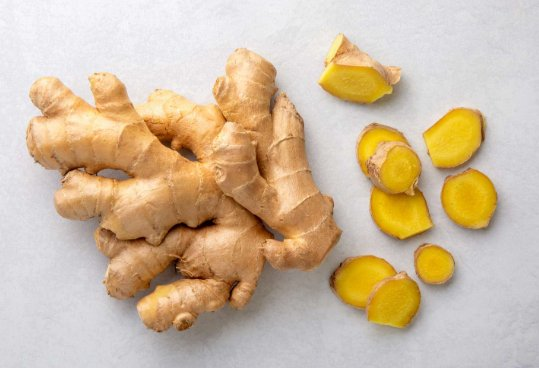
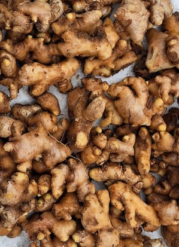

Fresh, organic, and sustainably grown produce delivered straight from our farm to your table. Experience the difference of real, natural food.

Fresh, organic, and sustainably grown produce delivered straight from our farm to your table. Our Brazilian Peru ginger is hand-harvested at peak freshness, delivering an intense aroma and bold, spicy flavour that sets it apart.

Fresh, organic, and sustainably grown produce delivered straight from our farm to your table. Our Chinese ginger variety offers a milder, subtler heat — perfect for culinary use across a wide range of traditional and modern dishes.
Why GEP
Committed to sustainable farming practices and environmental stewardship that preserves our land for future generations.
Quality, transparency, and community-focused agriculture for a better tomorrow — from soil to shelf.
Direct from farm, certified organic, and supporting local agriculture and the communities that depend on it.